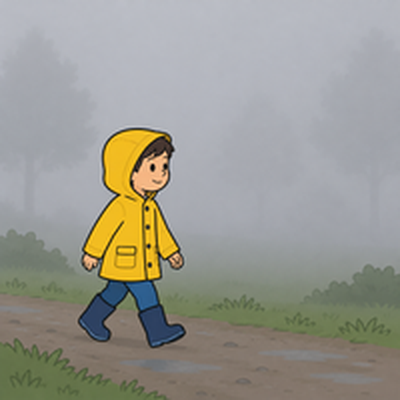

Unit 1 The Great Outdoors — 第三回｜天氣 Let's Talk
班級：______ 座號：____ 姓名：__________ 分數：______ / 100一、聽力測驗
老師會播放每題的錄音，請仔細聽，選出正確答案。
1. How's the weather going to be?
(A) foggy (B) hot (C) cold (D) cool
2. How do they feel?
(A) tired (B) angry (C) sad (D) excited
3. What does B say?
(A) Yes, it is. (B) No, it isn't. (C) B doesn't know. (D) B hopes so.
4. What does the newspaper say?
(A) It's going to be warm. (B) It's going to snow. (C) It's going to be foggy. (D) It's going to be hot.
5. Is tomorrow going to be cold?
(A) No, it's going to be hot. (B) No, it's going to be warm. (C) Yes, it is. (D) B doesn't know.
二、是非題
閱讀短文，判斷句子是 True（對）或 False（錯）。
Mia is talking with her friend on the phone. They are going to go camping tomorrow. Mia is really excited. Her friend asks, "How's the weather going to be?" Mia says, "It's going to be cold." Her friend asks, "Is it going to rain?" Mia says, "I'm not sure. I hope not."
6. Mia and her friend are going to go camping. （ T ／ F ）
7. Mia is not excited. （ T ／ F ）
8. The weather is going to be cold. （ T ／ F ）
9. Mia is sure it is going to rain. （ T ／ F ）
10. They are talking face to face. （ T ／ F ）
三、選擇題
選出最適合的答案。
11. How's the weather going to be tomorrow? ____
(A) He needs a helmet. (B) It's going to be foggy. (C) Yes, I am. (D) I'm going to go fishing.
12. The air is wet and sticky. The weather is ____.
(A) cool (B) dry (C) cold (D) humid
13. It's snowing outside. It's very ____.
(A) hot (B) humid (C) cold (D) warm
14. I don't know. = I'm ____.
(A) not sure (B) excited (C) foggy (D) cold
15. A: Is it going to rain? B: I ____ not.
(A) hope (B) hoping (C) am hope (D) hopes
16. How is the weather in the picture? 圖中天氣如何？

(A) warm (B) foggy (C) hot (D) cold
17. How is the weather in the picture? 圖中天氣如何？

(A) hot (B) humid (C) foggy (D) cool
四、文法測驗
選出文法正確的答案。
18. How's the weather ____ to be tomorrow?
(A) is going (B) going (C) goes (D) go
19. It's going ____ be cool.
(A) in (B) at (C) for (D) to
20. ____ it going to rain tomorrow?
(A) Do (B) Are (C) Is (D) Does
21. We ____ going to go camping tomorrow.
(A) are (B) is (C) am (D) be
22. It ____ going to snow.
(A) isn't (B) aren't (C) don't (D) am not
五、配合題
左邊的題目要配右邊哪一個？用下拉選單選出代號。
(A) 潮濕的
(B) 涼爽的
(C) 溫暖的
(D) 有霧的
(E) 寒冷的
23. cool （ ）
24. cold （ ）
25. humid （ ）
26. foggy （ ）
27. warm （ ）
六、句子改寫
依照提示改寫句子，直接輸入完整句子（注意大小寫與標點可忽略）。
28. （改成疑問句）It is going to rain tomorrow.
29. （改成否定句）It's going to be cold.
30. （改成疑問句）The weather is going to be hot.
31. （改成否定句）We're going to go camping.
32. （用 tomorrow 改成未來式）It is foggy today.
七、句子重組
依序點選單字，排成正確的句子。
33. going ／ to ／ be ／ It's ／ cold.
34. rain? ／ Is ／ to ／ going ／ it
35. hope ／ not. ／ I
36. to ／ go ／ tomorrow. ／ We're ／ going ／ camping
37. weather ／ going ／ be ／ the ／ tomorrow? ／ How's ／ to